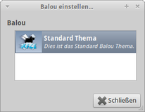

Splash Screen
Dieser Artikel wurde für die folgenden Ubuntu-Versionen getestet:
Dieser Artikel ist mit keiner aktuell unterstützten Ubuntu-Version getestet! Bitte diesen Artikel testen und das getestet-Tag entsprechend anpassen.
Zum Verständnis dieses Artikels sind folgende Seiten hilfreich:
Um ein eigenes Splashcreen-Thema für Xfce zu erstellen, benötigt man außer Kreativität nicht viel. Im Ordner /usr/share/themes/Default/balou findet man die benötigte Basisdatei themerc. Diese kopiert man ins eigene Homeverzeichnis und bearbeitet sie mit einem Editor [1]:
Die nachfolgende Tabelle erläutert den Aufbau der Basisdatei:
| themerc | |
| Element | Beschreibung |
[Info] | Themeninformationen |
Name= | Themenname (englisch) |
Name[de]= | Themenname (de = deutsch) |
Description= | Beschreibung (englisch) |
Description[de]= | Beschreibung (de = deutsch) |
[Splash Screen] | Designinformationen |
bgcolor= | Hintergrundfarbe (Farbverlauf: #7991ae:#b6c4d7 / ohne Farbverlauf: #7991ae:#7991ae) |
fgcolor= | Vordergrundfarbe |
logo= | Name des Logos |
Ein Beispiel:
# $Id: themerc 16256 2005-07-20 16:15:09Z benny $ # # Default xfce4-session balou theme # # Copyright (c) 2004 Benedikt Meurer <benny@xfce.org> # Copyright (c) 2004 François Le Clainche <fleclainche at wanadoo.fr> # All rights reserved. # # This program is free software; you can redistribute it and/or modify # it under the terms of the GNU General Public License as published by # the Free Software Foundation; either version 2, or (at your option) # any later version. # # This program is distributed in the hope that it will be useful, # but WITHOUT ANY WARRANTY; without even the implied warranty of # MERCHANTABILITY or FITNESS FOR A PARTICULAR PURPOSE. See the # GNU General Public License for more details. # # You should have received a copy of the GNU General Public License # along with this program; if not, write to the Free Software # Foundation, Inc., 59 Temple Place - Suite 330, Boston, MA # 02111-1307, USA. # # # Info section # [Info] Name=Default Theme Name[de]=Standard Thema Name[ja]=標準のテーマ Description=This is the default Balou splash theme. Description[de]=Dies ist das Standard Balou Thema. Description[ja]=これは標準の Balou スプラッシュテーマです。 # # splash screen settings # [Splash Screen] # The background color, can be a single color or a vertical gradient. The # latter is written as <color1>:<color2>. bgcolor=#7991ae:#b6c4d7 # The foreground color, used for text. fgcolor=#fefefe # The logo file, if the extension is missing, xfce4-session will search # for .svg, .png, .jpeg, .jpg, .xpm logo=logo
Nachdem man die Datei den eigenen Vorstellungen entsprechend angepasst hat, wird diese gespeichert. Nun benötigt man lediglich noch ein passendes Logo. Diese muss in den Formaten .svg, .png, .jpeg, .jpg oder .xpm vorliegen. Dieses kann man z.B. mit GIMP erstellen. Wichtig ist hier, dass der Name identisch mit dem in der Datei themerc angegebenen sein muss. Nachdem dieses angelegt wurde, erstellt man ein Verzeichnis mit der folgenden Struktur:
MEINTHEMA
MEINTHEMA/balou
In den Ordner MEINTHEMA/balou kopiert man die Datei themerc sowie das Logo. MEINTHEMA ist der selbst gewählte Name des Themas. Nun wird der Ordner MEINTHEMA gepackt [2] - das Endergebnis sollte lauten: MEINTHEMA.tar.gz
 Um das Thema zu installieren, den passenden Dialog öffnen - hier "Balou -> Konfigurieren" anwählen und die gepackte Datei in das Dialogfenster ziehen. Es wird eine Vorschau angezeigt und man kann das eigene Thema direkt auswählen. Über "Testen" kann man sich das Ergebnis anschauen. Beim nächsten Login ist dieses verfügbar.


- Erstellt mit Inyoka
-
 2004 – 2017 ubuntuusers.de • Einige Rechte vorbehalten
2004 – 2017 ubuntuusers.de • Einige Rechte vorbehalten
Lizenz • Kontakt • Datenschutz • Impressum • Serverstatus -
Serverhousing gespendet von